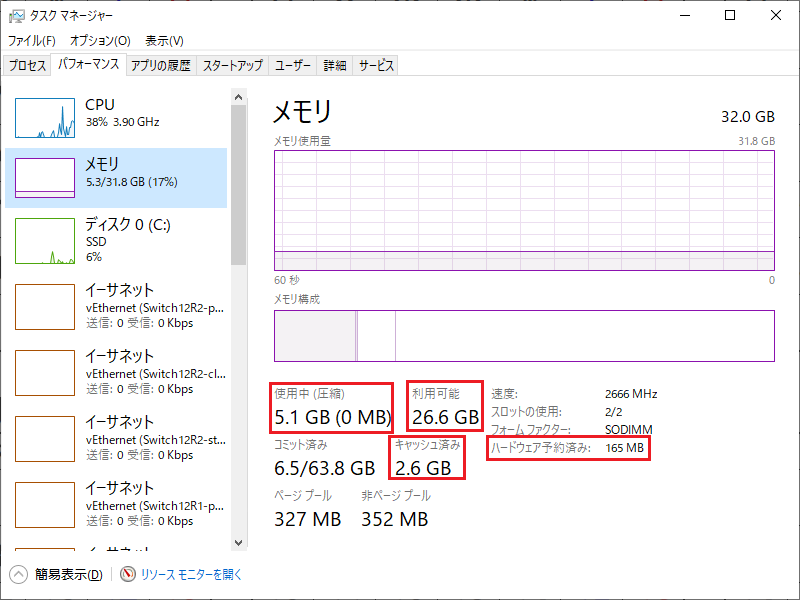
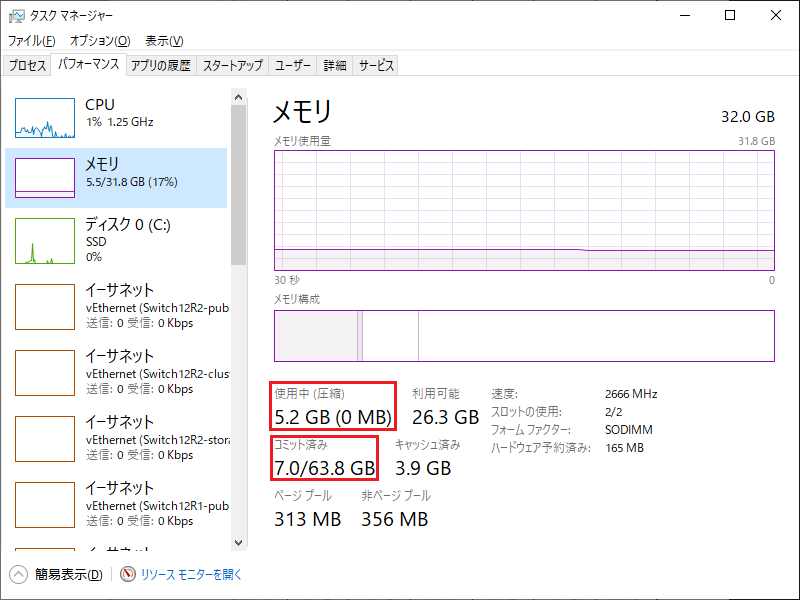
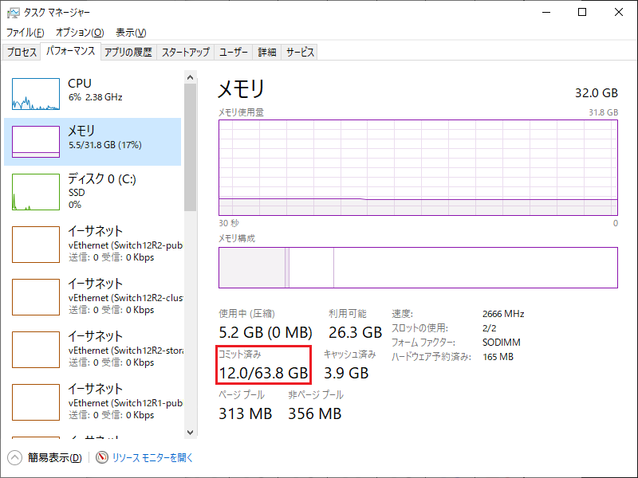
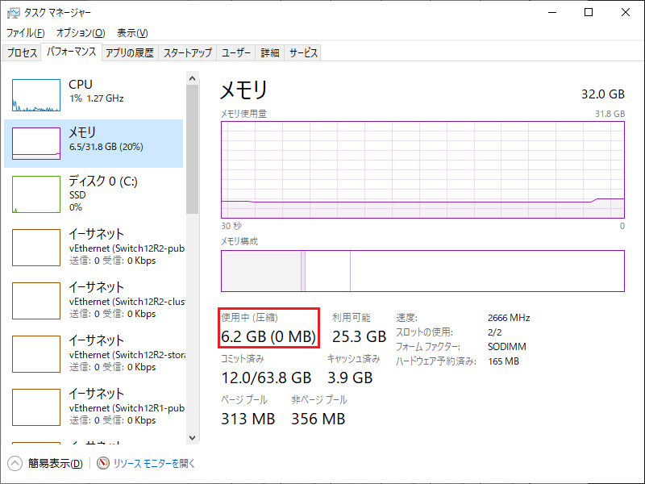
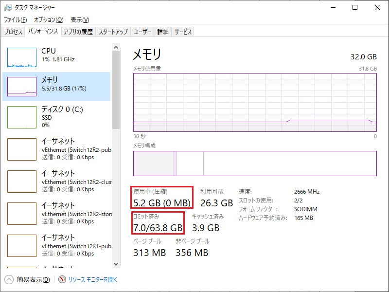
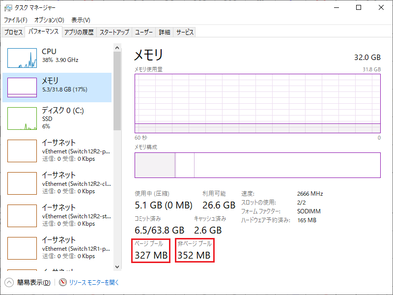
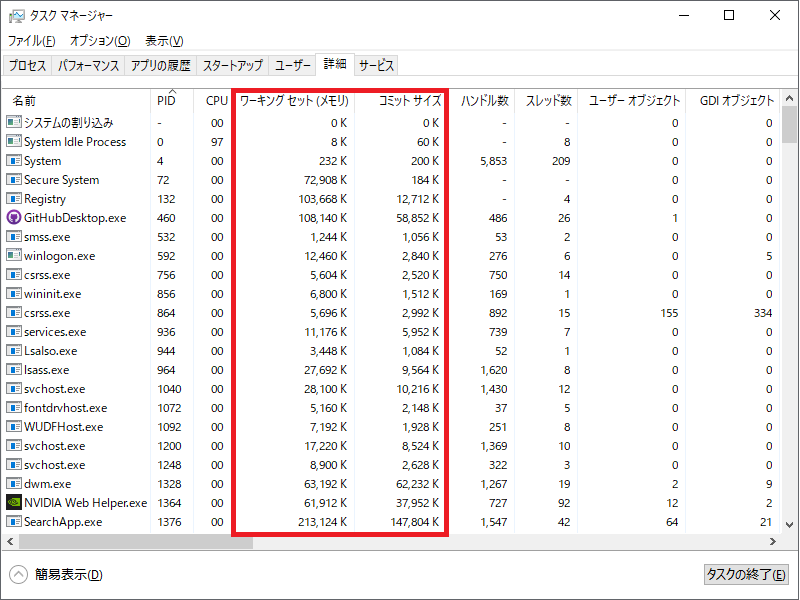

本記事はマイクロソフト社員によって公開されております。
こんにちは、Windows サポートチームの栗木です。
本記事では、タスク マネージャーで物理メモリ、仮想メモリ、システム領域のメモリ使用量を確認する方法をご紹介いたします。なお、スクリーンショットは、Windows 10 21H2 のものを使用しています。
適用対象の OS
- すべての Windows OS
物理メモリ
まず、物理メモリの情報である ハードウェア予約済み、使用中、利用可能、キャッシュ済み 項目について説明いたします。

物理メモリは以下のいずれかの状態をもちます。それぞれの内訳は、リソース モニターで確認ができます。
ハードウェア予約済み (Hardware Reserved)
BIOS または他の周辺機器のドライバーで使用するために予約されたメモリ使用中 (In Use)
プロセス、ドライバーまたは OS によって使用されているメモリ変更済み (Modified)
他の用途で使用する前にディスクへの書き込みが必要な内容が含まれているメモリスタンバイ (Standby)
キャッシュ データやアクティブに使用されていないコードが含まれているメモリ空き (Free)
現在、使用されておらず、プロセス、ドライバーまたは OS にメモリが必要になったとき最初に使用されるメモリ領域
タスク マネージャーには ハードウェア予約済み と 使用中 の使用量は、そのまま表示されていますが、他の状態はまとめられて表示されています。利用可能 は、[スタンバイ + 空き] であり、キャッシュ済み は、[変更済み + スタンバイ] になります。
メモリ管理の仕組みとしては、物理メモリが必要になると、最初に 空き が使われ、足りない場合は、スタンバイ にあるデータを解放し、その領域が使われます。そのため、空き が少なくなったからといってすぐに物理メモリ不足が発生するわけではありません。
さらに詳細に物理メモリの使用状況を確認したい場合は、RAMMap というツールがございますので、こちらをご活用ください。
仮想メモリ
次に、仮想メモリの情報である コミット済み 項目を説明いたします。
仮想メモリは、以下のいずれかの状態をもちます。
空き (Free)
予約でもコミット済みでもない領域予約 (Reserved)
将来で使用するためにあらかじめ予約されたメモリコミット済み (Commited)
コミットされたメモリ
タスク マネージャーには、コミット済み の情報が表示されており、コミット済み 項目の左側は、コミット済みになった仮想メモリ、右側は、仮想メモリの最大値（コミット リミット）を表しています。仮想メモリの最大値は、[物理メモリ + ページング ファイル] になり、ページング ファイルの設定を可変サイズにすると仮想メモリの最大値は変化します。
ページング ファイルのサイズを “すべてのドライブのページング ファイルのサイズを自動的に管理する” に設定している場合、環境に依存しますが、最大物理メモリの3倍までページングファイルは自動的に拡張されます。拡張される動きを確認したい場合は、Testlimit というツールがございますので、このツールを使用して意図的にメモリを確保すれば確認ができます。
コミット済みになった仮想メモリは、物理メモリまたはページングファイル上に割り当てが可能な状態になります。ただ、コミット済みになったメモリへアクセス（読み書き）がまだ発生していない段階では、メモリが割り当てられないため、コミット済みになった仮想メモリ量は、必ずしも物理メモリとページング ファイルに割り当てられたメモリ量と一致しません。そのため、物理メモリにまだ余裕があっても仮想メモリ不足が発生し、システムが不安定になる可能性があります。
仮想メモリをコミットした段階で、コミット済み 項目の値のみ変化し、物理メモリの使用量は変化しないことやコミットした仮想メモリへアクセスが発生した時にはじめて物理メモリの使用量が上昇する動きは、以下のプログラムで確認できます。エラーハンドリングはしていませんので、実行する場合は、必ず仮想メモリに 6GB 以上の空き容量があるテスト環境を使用してください。
1 | // コンパイル方法: Visual Studio のコマンドライン ツールより |




システム領域（ページ プールと非ページプール）
３つ目に、システム領域のメモリ情報である ページ プール と 非ページ プール 項目を説明いたします。

システム領域は、使用されていないときにページ アウトできる ページ プール とページ アウトできない 非ページ プール に分けられ、タスク マネージャーには、それぞれの使用量が表示されています。ページ プール のデータは、物理メモリまたはページングファイル上にあるのに対し、非ページ プール のデータは、常に物理メモリ上に存在しています。
環境によって異なりますが、目安として、ページ プール と 非ページ プール の使用量が物理メモリに対して８割を超えているまたは 5GB を超えている場合、システム領域でメモリ リークが発生している可能性が疑われます。
残念ながら、どの処理がメモリ リークを発生させているかは、タスク マネージャーでは確認できません。メモリ リークの原因調査は、Windows Performance Toolkit で提供されている Windows Performance Recorder (WPR) を使い、メモリ リークが発生している時にログ採取を行い、Windows Performance Analyzer (WPA) で採取したログを解析する必要があります。
プロセス
４つ目に、プロセスごとに使用している物理メモリ量と仮想メモリ量の確認方法を説明いたします。

プロセスのメモリ使用状況はタスク マネージャーの詳細タブから確認ができます。デフォルトの状態だと表示されていないので、カラムを右クリックして ワーキング セット(メモリ) と コミット サイズ を追加してください。ワーキング セットが物理メモリの使用量、コミットサイズが仮想メモリの使用量に対応しています。これらの項目の値が普段より大きくなっているプロセスがある場合は、そのプロセスでメモリ リークが発生している可能性がございます。
PowerShell による情報の取得方法
最後に、メモリ関係の情報を PowerShell で取得する方法をご紹介いたします。
取得方法は、WMI オブジェクトからメモリ関係やパフォーマンス カウンターのプロパティを参照してください。
1 | $wmiobject = Get-WmiObject Win32_OperatingSystem |
参考 URL
変更履歴
- 2021/05/10 : 本 Blog の公開
- 2022/12/26 : プロセスの説明を追加